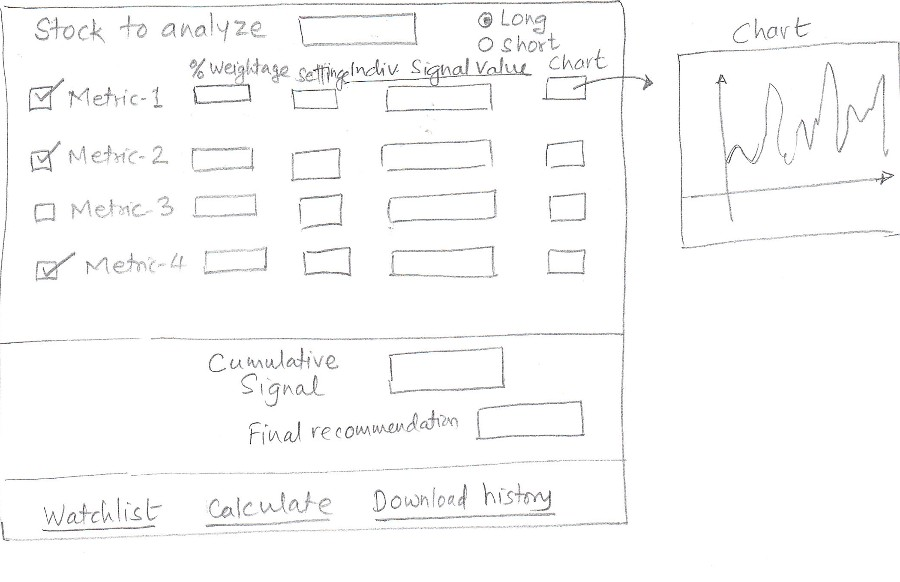

The main idea is to come up with a simple tool that will tell user whether he/she should buy, sell or hold a
particular stock. This analysis will take into account the stock history, the current market conditions and
some custom numerical metrics to come up with the final recommendation.
User will enter a list of stocks that he/she would like to track. There would be certain additional parameters
that would be needed like the period of interest over which the user wants to make the decision about
buying, selling or holding the stock, the overall size of the portfolio and some technical parameters.
Internally, the system will compute multiple metrics. Each metric will have a certain weightage. Based on the
weightage for that metric and its value, a final cumulative signal will be computed and conveyed to the user.
Each signal and the cumulative signal value will be between -100 and +100, with each end corresponding to
either a complete buy or sell signal (based on short or long position). A value of 0 would be considered
neutral implying hold.
Users can also create watchlists of stocks. The trading data will be downloaded from finance sites like Yahoo
or Google Finance. Here's a rough sketch:
